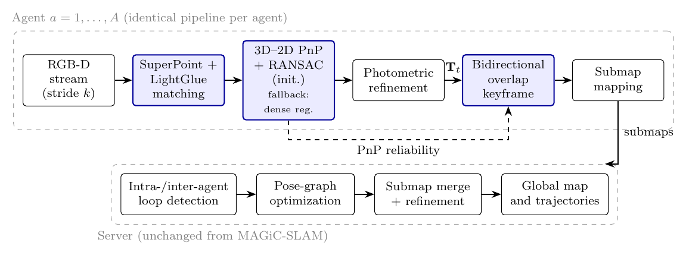
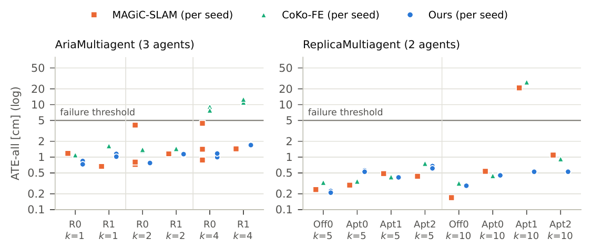

1Institute of System Integration, Le Quy Don Technical University ·
2AI and Data Science Research Center, Le Quy Don Technical University ·
3University of Engineering and Technology, Vietnam National University, Hanoi
When agents see the scene only every k-th frame, multi-agent 3DGS SLAM fails one agent at a time, in pose tracking, and pose-graph optimization does not repair it.
The cause is the dense-registration initializer. Initializing every frame with SuperPoint–LightGlue PnP and selecting keyframes by bidirectional depth overlap removed every failure in our runs.
0 / 42failed runs (ours)
20.9–26.8 → 0.5 cmATE on the hardest sequence
≈ ½peak GPU memory on Replica
14dataset–stride–scene settings
Abstract
Multi-agent Gaussian Splatting (3DGS) SLAM builds a shared photorealistic map, but current systems are tested on densely sampled RGB-D streams. In deployment, agents often observe the scene only at a reduced rate, because of bandwidth limits, dropped frames, or a deliberately lowered processing rate on a consumer GPU. We analyze MAGiC-SLAM and the front-end of Coko-SLAM on two multi-agent datasets at five frame strides. Failures are local: usually a single agent loses track while its teammates remain accurate, and near the robustness limit the outcome depends on the seed. They arise in per-agent pose tracking, and pose-graph optimization does not repair them; in one run it pulled a healthy agent off its trajectory. A per-frame study traces them to the dense registration used for initialization, which is precise at small motion but yields a few catastrophic poses at large motion. Photometric refinement, in turn, removes most of the advantage of a precise initialization. We therefore initialize every frame with SuperPoint–LightGlue PnP, and select keyframes by bidirectional depth overlap to reduce cost. In 42 runs the system never failed, reduced the error on the hardest sequence from 20.9–26.8 cm to 0.5 cm, was comparable elsewhere, and halved peak GPU memory on Replica.
Method

Multi-agent pipeline. Shaded blocks are the agent-side components of our front end (SP+LG matching, PnP initialization with dense-registration fallback, bidirectional-overlap keyframes). Photometric refinement, mapping and the server are inherited from MAGiC-SLAM.
Results

ATE-all per setting (log scale), one marker per seed, released configurations for the baselines. Runs above the 5 cm line are failures.
Image placeholder static/images/traj_replica.png
Estimated vs. ground-truth trajectories, Replica Apartment-1, k = 10.
Image placeholder static/images/traj_aria.png
Estimated vs. ground-truth trajectories, Aria Room-1, k = 4.
Rendered views of the merged Gaussian map: MAGiC-SLAM vs. ours.
Video placeholder static/videos/demo.mp4
Fly-through of the reconstructed map.
Datasets
We evaluate on ReplicaMultiagent (four synthetic scenes, two agents, strides k ∈ {5, 10}) and AriaMultiagent (two real rooms, three agents, strides k ∈ {1, 2, 4}). Both datasets are available from their original providers; download instructions are in the code repository.
BibTeX
@article{nguyen2026tracking,
title = {Tracking Failures of Multi-Agent Gaussian Splatting SLAM under Temporally Sparse RGB-D Input: Analysis and a Feature-Guided Front End},
author = {Nguyen Xuan, Phuc and Nguyen, Huu-Hung and HoangVan, Xiem},
journal = {TODO},
year = {2026}
}